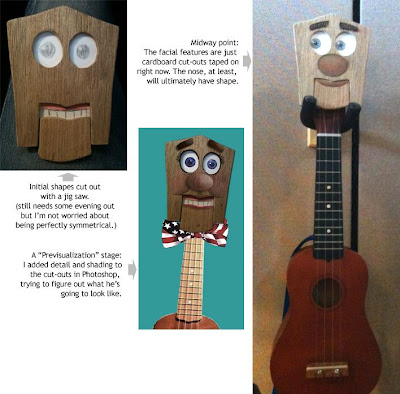

Huey Ukuleel progress
6/25/2010
When Ted Nunes asked me for some advice on how he could create a "talking" ukulele, a gave a general response. But I'll be honest, his creative work is resulting in a character far superior to anything I would have imagined!
The jaw slides up and down with rubber band for tension. The string feeds through the head stock and down the back of the neck where it will connect to the body under some tension. The string will be knotted in several places so Ted can work the mouth with his thumb wherever his hand might be positioned along the fretboard. Eyes will move side to side. Raising eyebrows are being considered. I'm looking forward to seeing the finished product! Excellent job, Ted!

The jaw slides up and down with rubber band for tension. The string feeds through the head stock and down the back of the neck where it will connect to the body under some tension. The string will be knotted in several places so Ted can work the mouth with his thumb wherever his hand might be positioned along the fretboard. Eyes will move side to side. Raising eyebrows are being considered. I'm looking forward to seeing the finished product! Excellent job, Ted!